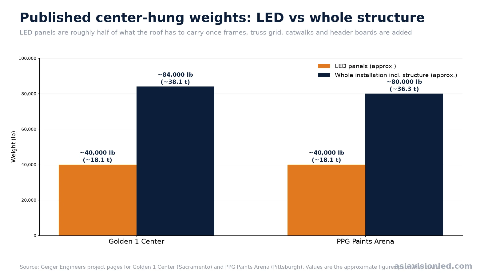
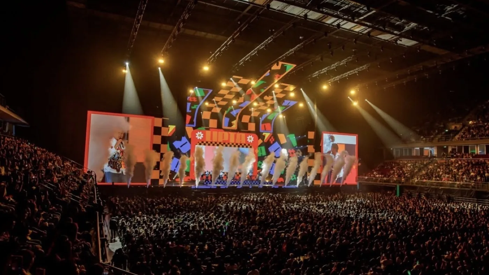

Four-sided LED cube suspended above an arena crowd (Asia Vision image library).
Center-Hung LED Scoreboards for Indoor Arenas: A 2026 Buyer Guide
2026-11-10Asia VisionSports
The center-hung is the screen every seat in an arena looks at. It carries the score and clock, replays, sponsor loops and the moments that make a crowd stand up. It is also the heaviest single object most arenas ever hang from their roof. That makes buying one part display project and part structural project. Venues that treat it as only a screen tend to find the hard problems late.
This guide covers the decisions in order: screen layout and pitch, structure and rigging, operations, and the content workflow. It draws on arena projects that have published their numbers. For the wider venue picture, including perimeter and ribbon boards, see our sports venue LED guide.
What Recent Arena Projects Show
Recent installations give useful reference points for what the market expects:
Kia Center, Orlando (completed October 2025). ANC describes the new center-hung's main display as 4 mm pitch, 27 ft high and 176 ft around, a 350-degree canvas of 4,600 sq ft. An interior 2.5 mm display adds 1,823 sq ft for lower-bowl fans, bringing the board to 6,461 sq ft and, per ANC, more than 44 million pixels. The arena stayed open for games and concerts during the work.
Amerant Bank Arena, Sunrise, Florida (October 2025). Sports Video Group reports four 4 mm displays of 38 × 31 ft each, two angled 11 × 18 ft underbelly screens and a 75 ft diameter halo, with 4,762 sq ft of LED in total. The previous board dated from 2013. Work started on June 23 and was finished before the first preseason game on September 29.
CURE Insurance Arena, New Jersey (October 2026). Daktronics announced a five-display center-hung system together with three entrance displays.
Two patterns stand out. First, the main faces of large professional boards sit around 4 mm, with a finer display underneath for the closest seats. Second, the center-hung is usually one part of a wider refresh that also covers ribbon boards, entrance displays and the control room.
Layout, Faces and Pixel Pitch
Count the faces from the seats
Four flat faces is the classic layout. Wrap-around and circular designs like Orlando's aim for a near-continuous canvas, and halos or rings add a band of LED above or below the main faces. Start from the seating bowl: which seats look at which face, and from what distance and angle. The answer sets both face size and pitch.
Pitch follows the distance to the nearest seats
Upper-bowl seats may be far away, but every face also serves a ring of closer seats, and the TV cameras zoom in on it. That is why large arenas have moved finer, with 4 mm main faces and 2.5 mm underbelly displays in the examples above. Smaller college or community arenas with shorter sightlines can work at a coarser pitch. Use the closest regular viewer and the camera's tightest shot to decide. Our viewing distance guide explains the maths.
Brightness, refresh and HDR
Indoors, glare and contrast matter more than peak brightness. A center-hung run too bright under dim house lights washes out faces on camera. Specify high refresh and genlock so broadcast cameras do not pick up banding. Our stadium broadcast guide covers the camera side. HDR capability is now common in new boards. The Amerant Bank Arena article notes the new board is 4K HDR-capable but was being run in 1080p SDR at launch while the content team adapted. Budget for the content pipeline, not just the screen.
Structure, Rigging and Weight
A center-hung is a suspended structure, and the published numbers show why it must be engineered as one. Geiger Engineers, which designed the support structures for two NBA and NHL boards, reports these figures:
Golden 1 Center, Sacramento: the LED panels alone weigh almost 40,000 lb. The whole installation, including LED, header board and support truss grid, weighs about 84,000 lb. The grid hangs on four cables leading to two winches, so the whole assembly can be lowered for maintenance.
PPG Paints Arena, Pittsburgh: a cruciform truss grid supports nominally 40,000 lb of LED panels and three levels of catwalk. The full installation, including belly boards, weighs about 80,000 lb.
Figure 1 puts those figures side by side. In both cases the LED is roughly half of what the roof has to carry.

Figure 1. Published approximate weights: LED panels vs the whole installation. Source: Geiger Engineers project pages.
Static hang or hoist
Daktronics' manual for four-sided indoor scoreboards says the suspension method must be decided at the time of purchase. It describes two routes:
Static hang with two or four cables, distributed symmetrically to keep the board level. Cable assemblies must have a nominal strength greater than six times the actual load, and a structural engineer must certify that the building can carry it.
Electric hoist, which lets the board be lowered for service or raised clear for concerts. The manual calls this more complex. A building engineer must approve the combined weight of the scoreboard and hoist plus an impact factor of at least 15 percent, and the hoist must stay accessible for the periodic inspections that ANSI and OSHA require in the US.
Fair-Play's indoor installation guidance likewise requires a rigid support structure, and any mounting design provided by others must carry the stamp of a licensed professional engineer registered in the state of installation. Outside the US the codes change, but not the principle: the manufacturer supplies weights and attachment points, and a local engineer signs off the structure. Our structural load guide explains dead, live and dynamic loads.
Designing for a Multi-Purpose Arena
Most arenas host concerts, family shows and other sports as well as the home team, and the center-hung has to fit around all of them. Touring productions bring their own rigging and screens. A board that cannot be raised or moved can block sightlines or the stage design, and its hoist and trim height become part of every booking conversation.
Figure 2 shows an arena in concert configuration, with stage, screens and seating oriented to one end of the bowl.

Figure 2. An arena in concert mode, where the center-hung must clear the touring rig and stage sightlines (Asia Vision image library).
Plan service access the same way. Catwalks like Pittsburgh's, or a hoist that brings the board to the floor like Sacramento's, decide how quickly a failed module or power supply can be fixed between events. Front-serviceable cabinets shorten the job on catwalk-access designs.
Control, Content and Timeline
The center-hung only works when the timing system, replay, graphics and sponsor playout drive every face in sync. In the Florida project the team chose a unified content-management platform and rebuilt its screen layouts from scratch. They "pulled images of every centerhung" they could find for reference. Specify the control system together with the screen, not afterwards.
Timelines are tight because seasons do not move. Amerant Bank Arena had about three months between the end of one season and the next preseason, and the club blocked out July on the venue calendar for the work. Orlando's arena kept hosting events during construction. Build your schedule from the venue's calendar first, then fit manufacturing, shipping and installation inside it.
What to Put in the RFP
Face count, sizes and pitch for each face, ring and underbelly display, with the closest viewing distance for each.
Total system weight: LED, frames, truss grid, catwalks and cabling. Ask for each component listed separately.
Static hang or hoist, the required safety factors, and who supplies the structural certification.
Refresh rate, genlock, grayscale and HDR support for the broadcast cameras.
Service method (front or rear), spare-parts stock and the response time during the season.
Control and content system, including synchronisation of all faces and ribbons.
Installation window, with the venue's event calendar attached.
We are an LED display manufacturer, not a rigging contractor, so on a center-hung we work alongside your structural engineer and integrator. Our indoor platforms include the X Series, a front-service cabinet system with SMD pitches up to P3.91, and the S Series, a rental platform that can be reconfigured for event screens. Arena-specific shapes such as rings, angled underbelly faces or cabinets with special mounting fall under our custom manufacturing work. We provide cabinet weights and attachment details early so the structure can be designed around real numbers. Panels carry a 3-year warranty with 18-day factory dispatch for standard orders.
FAQ
Q: What pixel pitch is used on arena center-hung scoreboards?
A: Recent professional arena boards published 4 mm for the main faces, with finer 2.5 mm displays underneath for lower-bowl seats, for example at Orlando's Kia Center. Smaller arenas with shorter sightlines can use a coarser pitch. Size it to the closest regular viewer and the broadcast camera.
Q: How heavy is a center-hung scoreboard?
A: It varies widely. Geiger Engineers publishes about 40,000 lb of LED panels and about 84,000 lb in total at Golden 1 Center, and about 80,000 lb in total at PPG Paints Arena. Structure, catwalks and header boards can weigh as much as the LED.
Q: Should a center-hung be static or on a hoist?
A: A hoist allows service at floor level and clearance for concerts, but it adds cost, inspection duties and engineering. Daktronics' guidance calls for an engineer to approve the scoreboard and hoist weight plus at least a 15 percent impact factor. Decide at the time of purchase.
Q: How long does a center-hung replacement take?
A: Published projects show tight windows. The Amerant Bank Arena board was delivered between June 23 and late September 2025. The venue calendar, not manufacturing alone, usually sets the timeline.
Q: Does a center-hung need special refresh rates for TV?
A: Yes. Specify high refresh and genlock so broadcast cameras do not show banding or flicker, and test with the broadcaster's cameras before the season.
Sources
ANC, "ANC Completes Major Technology Overhaul for Orlando's KIA Center" (27 October 2025).
Sports Video Group, "Florida Panthers Begin Second-Straight Title Defense With New Centerhung at Amerant Bank Arena" (6 October 2025).
Daktronics on X, five-display centerhung at CURE Insurance Arena (24 October 2026).
Geiger Engineers project pages: Centerhung LED Scoreboard, Golden 1 Center; Centerhung Videoboard Structure, PPG Paints Arena.
Daktronics, Four-Sided Indoor Hockey LED Scoreboards manual ED-11992 (rev. 3).
Fair-Play, Indoor Scoreboard & LED Display Install Recommendations 98-0001-22.
Scoping a center-hung, halo or ribbon refresh? Share your bowl drawings and target faces. We will come back with pitch options, cabinet weights and a manufacturing schedule you can plan around. Start a project enquiry.